Name: Math 241: Calculus & Analytic Geometry A
Exam 2 Solution Guide
November 1 2002
There is always one moment in childhood when the door opens and
lets the future in.
- Graham Greene, The Power and the Glory.
Instructions: Show all work to receive full or partial credit. All University rules and guidelines for student conduct are applicable.
Beneath each problem is percentage of students who earned 80% or more of the points for that question.
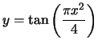
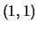
. Simplify your answer as much as possible.
Section 016: 64.3% Section 017: 87.5% Section 018: 60% All sections: 71.2%
Very similar to problem 3.6: 47a.
This problem is a direct application of the chain rule:
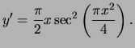
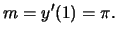
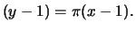
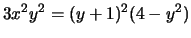
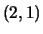
. Simplify your answer as much as possible.
Section 016: 50% Section 017: 75% Section 018: 83.3% All
sections: 69.5%
Very similar to 3.7: 30.
This is a direct application of implicit differentiation. Differentiating, we obtain:
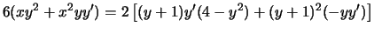
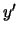
, one gets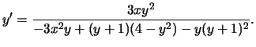
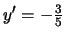
. Thus, the equation of the tangent line is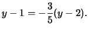
Section 016: 14.2% Section 017: 37.5% Section 018: 20% All sections: 23.2%
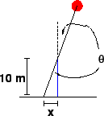
Very similar to 3.9: 32.
The sun goes around once every 24 hours. Alternatively, one knows
that the sun traverses the sky overhead in 12 hours. Thus,
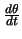 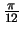 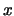
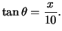
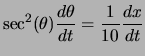
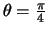
, so that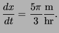
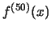
where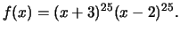
Section 016: 35.7% Section 017: 45.8% Section 018: 50% All sections: 43.9%
Very similar to example discussed in lecture.
Similar to 3.8: Example 3.
From our knowledge of Pascal's triangle and multiplication of polynomials, we know that
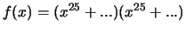
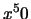
. Taking 50 derivatives will eliminate every power of that is 49 or less. In other words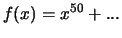
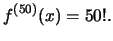
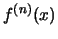
where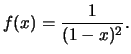
Section 016: 64.2% Section 017: 87.5% Section 018: 80% All
sections: 76.8%
Similar to 3.8: Example 4.
Very similar to 3.8: 34.
Just differentiate and look for a pattern.
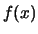 |
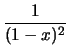 |
||
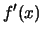 |
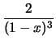 |
||
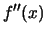 |
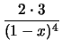 |
||
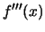 |
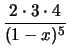 |
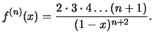
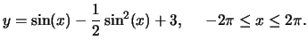
Section 016: 10.7% Section 017: 37.5% Section 018: 23.3% All sections: 23.2%
Similar to 4.1: Example 9, problem 57, 58.
We need to find the roots of .
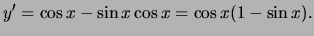
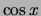
on the given interval are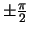
and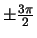
. The roots of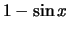
on the given interval are simply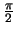
and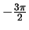
. Both of the roots are already roots of the first term. Now, we must classify the roots.| Interval | Incr/Decr |
|
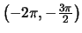 |
Increasing |
|
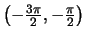 |
Decreasing |
|
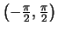 |
Increasing |
|
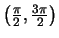 |
Decreasing |
|
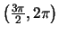 |
Increasing |
Thus, has local maxima at and and local minima at and .
Section 016: 7.1% Section 017: 8.3% Section 018: 3.3% All sections: 6.1%
We must find the roots of that correspond to changes in the sign of .
Section 016: 67.9% Section 017: 95.8% Section 018: 83.3% All sections: 81.7%
Similar to 4.1: 47-52.
We must check all the critical points and the endpoints of the
interval.
Checking each critical point and endpoint we find that